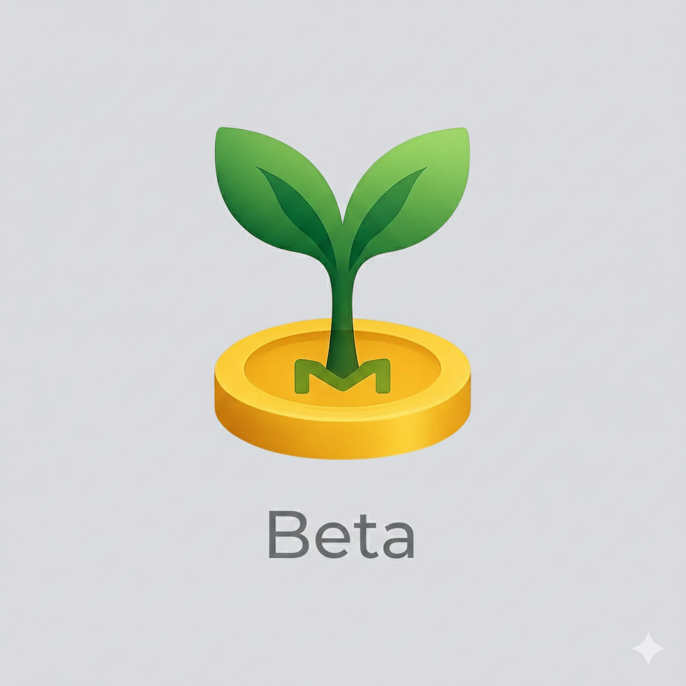

Monee
讀取中...
資料已還原
匯入中...
重新整理中...
功能選單
更新
立即更新
重新整理
資料管理
匯出備份
匯入還原
雲端備份設定
損益管理
損益歸零
恢復損益
API 設定
Finnhub Key (美股報價)
Fugle Key (台股報價)
Gemini Key (讀圖)
分頁顯示
深色模式
Monee
總淨資產
--
今日: +0
USDT ...
USD ...
類別
資產: 0
TWD
2025年11月
週日
週一
週二
週三
週四
週五
週六
支出
總支出：$0
原始支出+代墊
原始支出：$0
原始支出
代墊：$0
代墊
收入
總收入：$0
原始收入+代墊
原始收入：$0
原始收入
代墊：$0
代墊
支出
$0
收入
$0
轉帳
$0
資產
記帳
資產詳情
NVDA
NVIDIA Corp
0
持有股數
0
現價 (USD)
0
參考市值
當天損益
+0
持股成本損益
+0 (0%)
參考損益 (含手續費)
取消
帳戶編輯
儲存
基本設定
庫存明細
選擇券商 (手續費率)
國泰證券 (1.425%)
國泰證券 (定期定額 固定1元)
富邦證券 (0.25%)
自訂...
匯入截圖 (AI 辨識)
類型
錢包
加密貨幣
美股
台股
負債
標籤
現金
銀行
信用卡
電子貨幣
簽帳金融卡
銀行
名稱
代碼
幣別
TWD (新台幣)
USD (美金)
股數
平均成本
* 輸入代碼，預設使用美金報價
刪除
尚未匯入明細資料
支出
收入
轉帳
固定轉帳
新增支出
新增收入
轉帳
固定轉帳
設定
固定轉帳
固定轉帳
選擇重複頻率
每日
每星期
每月
每年
選擇日期
取消
確定
選擇標籤顏色
選擇假日調整
不調整
提前
延後
記事
儲存
取消
選擇帳戶
固定轉帳
支出
收入
轉帳
取消
儲存
新增收入
日期
標題
金額
$
類別
選擇類別
帳戶
選擇帳戶
代墊
固定轉帳
支出
收入
轉帳
取消
儲存
新增支出
日期
標題
金額
$
類別
選擇類別
帳戶
選擇帳戶
代墊
固定轉帳
支出
收入
轉帳
取消
儲存
轉帳
日期
標題
從帳戶
選擇轉出帳戶
到帳戶
選擇轉入帳戶
金額
$
選擇類別
取消
儲存
固定轉帳
標題
使用帳戶全部金額
關閉
使用帳戶
匯出方（從帳戶）
金額
從帳戶
從帳戶
到帳戶
到帳戶
標籤
選擇顏色
重複
每月
按期數
開始日期
2025年12月2日 週二
結束日期
永不結束
假日調整
不調整
週期入帳日程
下回
:2025年12月2日 週二
下下回
:2026年1月2日 週五
計算機
完成
0
C
CE
⌫
÷
7
8
9
×
4
5
6
−
1
2
3
+
±
0
.
=
選擇使用者
完成
新增使用者
編輯使用者
完成
使用者名稱
頭像
選擇頭像
儲存
取消
選擇頭像
完成
預設頭像
上傳照片
選擇照片
裁切照片（拖動調整位置，
滾輪縮放
）
確認
取消